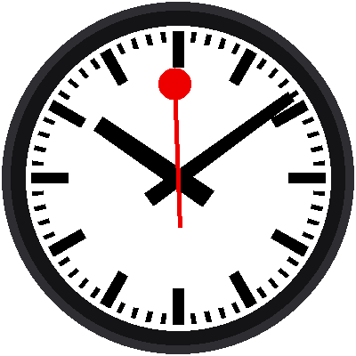
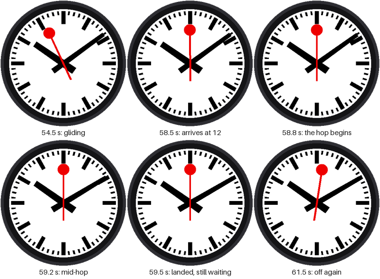

Lab 12: The Minute Jump

This is the best part of the whole kit. When the red hand stops at 12, the minute hand hops ahead one minute while it waits, and the hour hand creeps along with it. Then the red hand sets off again. Watch the picture above a few times: the pause is not an accident. It's a stage, and the minute hand is the actor.
Welcome to Lab 12
 Everything you built so far was leading to this lab. You'll teach the
minute hand to move with a smooth start and a soft landing, in the
exact moments the red hand is standing still. Let's make time tick!
Everything you built so far was leading to this lab. You'll teach the
minute hand to move with a smooth start and a soft landing, in the
exact moments the red hand is standing still. Let's make time tick!
What You Will Learn
- how to write a function that returns a number
- what an easing curve is, and why it looks better than a straight line
- how to clamp a number so it stays in a range
Run It
Open 12-minute-jump.py in Thonny and click Run. You'll have to be
patient: the hop happens once a minute. Watch the clock near the end of
a minute. The red hand arrives at 12 and stops. A beat later, the
minute hand begins to hop.
The Timeline of One Minute
| From (ms) | To (ms) | What happens |
|---|---|---|
| 0 | 58,500 | The red hand glides around the dial |
| 58,500 | 58,650 | Everything is still. A tiny beat. |
| 58,650 | 59,370 | The minute hand hops. |
| 59,370 | 60,000 | Everything is still again. |
| 60,000 | The red hand sets off. A new minute begins. |

Easing: A Hop with Weight
Suppose the hop took 720 ms. The simplest way to move the minute hand is
in a straight line: after half the time, it's half way. But a straight
line starts and stops at full speed, like a machine. A real hand with weight
speeds up gently and slows down gently. A curve that does that is called
an easing curve, and the one this lab uses is called smootherstep:
1 2 3 | |
You give it a number from 0.0 (the start) to 1.0 (the end), and it gives back how far along the hop should be:
| Time through the hop | 0.0 | 0.25 | 0.5 | 0.75 | 1.0 |
|---|---|---|---|---|---|
| Straight line | 0.0 | 0.25 | 0.5 | 0.75 | 1.0 |
smootherstep |
0.0 | 0.10 | 0.5 | 0.90 | 1.0 |
Early on, the curve moves less than the line. In the middle it catches up, and at the end it slows down again.
A Function Can Be a Shape
 You can think of
You can think of smootherstep as a shape drawn on graph paper: an S.
You hand it any number from 0 to 1 and it gives you the height of the S
at that spot. Any move on a screen can borrow that shape.
The line x = max(0.0, min(1.0, x)) is clamping. min(1.0, x) stops x
from going above 1, and max(0.0, ...) stops it from going below 0. So
before the hop starts, the answer is 0.0, and after it ends, the answer is
1.0, with no extra if needed.
The Hop
A second function turns the time into "how far through the hop":
1 2 | |
And then the three angles use it. The minute hand moves one minute (6°)
times step, and the hour hand moves its half degree:
1 2 3 4 | |
Notice what doesn't appear: no if for "is the red hand stopped?" The
numbers do it by themselves. The hop starts at 58,650 ms, which is after
the 58,500 ms when the red hand stops, so the minute hand only moves
while the red hand stands still.
Staying in Step with the Real Time
The program also checks itself against the Pico's real-time clock once a minute, while everything is at rest:
1 2 3 | |
clock.sync() waits for the next tick of the clock, then starts counting
again from it. The red hand therefore sets off exactly at the top of the
minute, and the clock can never drift away from the real time.
Don't Wait a Whole Minute
 Click Run when the seconds on your computer's clock are around 50.
The red hand starts partway around the dial, and the first hop arrives
in about ten seconds.
Click Run when the seconds on your computer's clock are around 50.
The red hand starts partway around the dial, and the first hop arrives
in about ten seconds.
Try This
- Replace
smootherstep((ms - HOP_START_MS) / HOP_MS)with justmax(0.0, min(1.0, (ms - HOP_START_MS) / HOP_MS)). That's a straight line. Can you see the difference? - Change
HOP_START_MSto58500. What does it feel like when the hop begins the instant the red hand stops? - Change
HOP_MSto1200. It still fits inside the pause. Now try2000. The hop runs past the end of the pause, so why does that look wrong?
The Signature Move!
 You wrote an easing function, clamped it with
You wrote an easing function, clamped it with min and max, and
timed a minute-hand hop to land inside the red hand's pause. Next, you'll
test the three buttons.
Next: Lab 13: Button Test